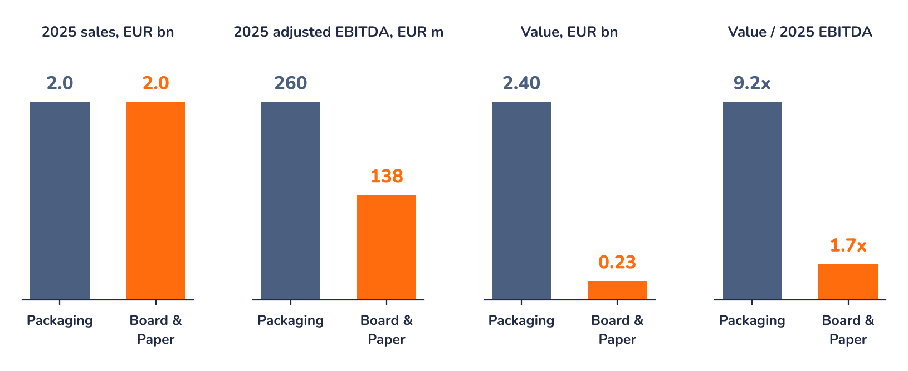

Ad-hoc opinion · Paper & Packaging
The deal in numbers
Chart 1 · MM: from EUR 2.4bn to the special distribution
Expected cash proceeds from the transaction, EUR bn, rounded as published by the company

Source: Mayr-Melnhof, investor presentation of 9 November 2026; Syz Research
The EUR 0.4bn is not a payment to MM: it is what MM invests to keep 30% of the new holding. It is also well below 30% of EUR 2.4bn (EUR 0.72bn), because the enterprise value includes debt. EUR 0.4bn for 30% implies about EUR 1.3bn of equity for 100%, so the new holding would carry about EUR 1.0 to 1.1bn of acquisition debt (Syz calculation). MM's stake is therefore leveraged equity: more upside if KPS grows the business, more downside if it does not, which is also why the stake can be cut to 20%.
Chart 2 · Same sales, very different price tags
Packaging vs. Board & Paper: 2025 sales and adjusted EBITDA, value and value/EBITDA

Packaging value: KPS deal value. Board & Paper value: implied by the share price at EUR 74.10 (Syz calculation). Board & Paper figures include the remaining packaging operations in Iran and Tunisia. Source: Mayr-Melnhof, investor presentation of 9 November 2026; Syz Research, Bloomberg